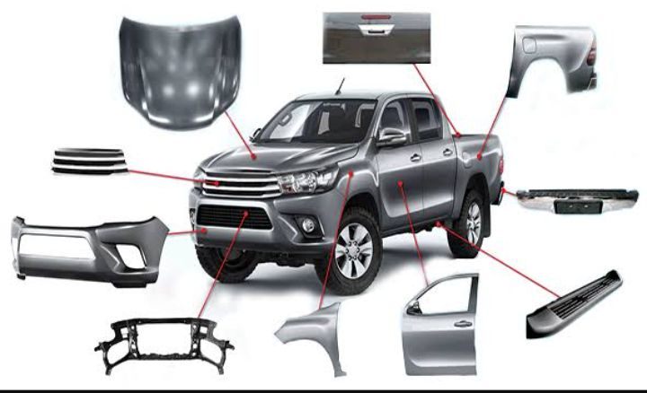
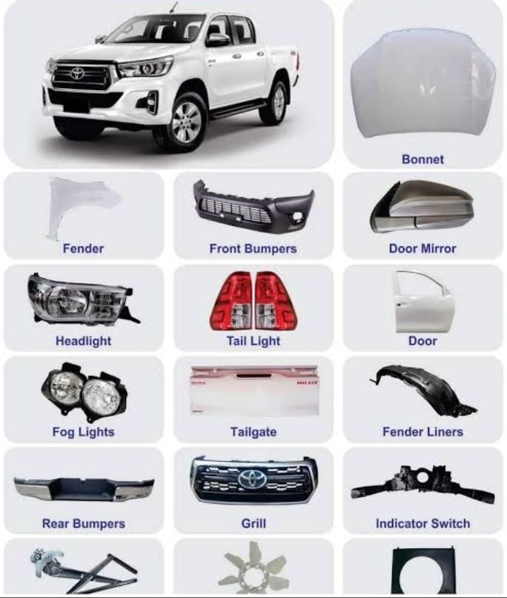

Great Truck & Auto Spares
Home Page
Contacts
About Us
Auto-Parts
At Great Trucks & Spareswe have auto-body parts for most of the vehiclesand trucks that are common in Southern Africa. For any
vehicle replacement parts, we hold the genuine parts that fits onto many vehicles and trucks. Despite being excellent in engine and
auto parts we are also seniors in dealing with vehicle body parts. Thus from:
Bonnets
Tail lights
Side view Mirrors
Rear View Mirrors
Head Lamps
Rear grill
Front grill
Complete car doors
Car Boot
Exhaust
Windscreens and door glass
Just naming a few and we have a whole lot of other items in stock for trucks and heavy trucks and private vehicles.


All auto body parts are in stock for all vehicles.

Truck Service & Suspension

We have service kits for trucks and heavy vehicles including suspension for all vehicles. When you need to change shocks, tirerod ends
bushes, ball-joints, CV joints and steering racks we are the people to talk to.